아이가 낱말과 문장을 소리 내어 읽으면 그 목소리를 녹음합니다.
선생님은 진행과 낱말 쓰기 표시만 맡습니다 — 점수는 담당자가 매깁니다.
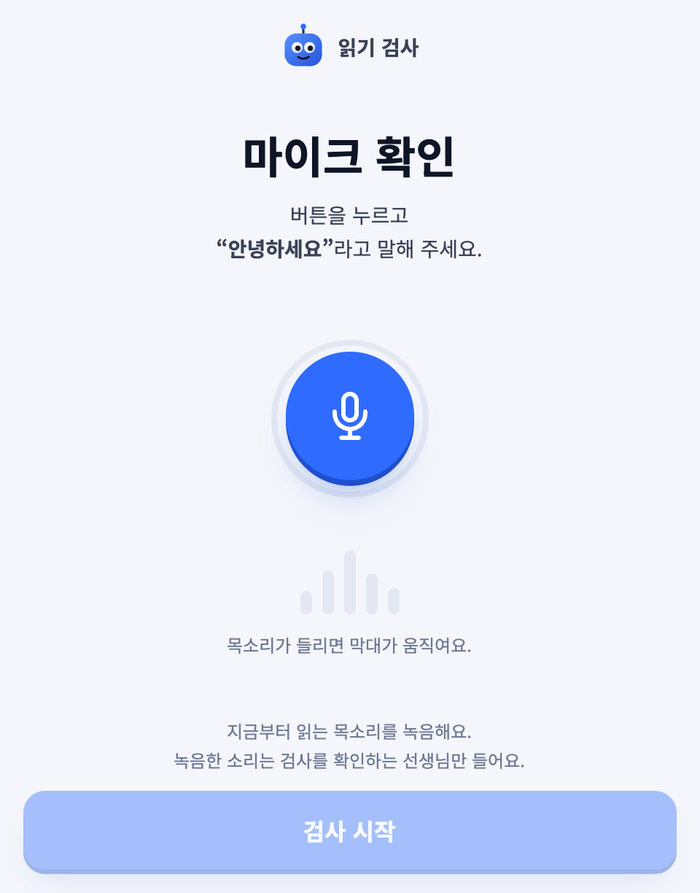
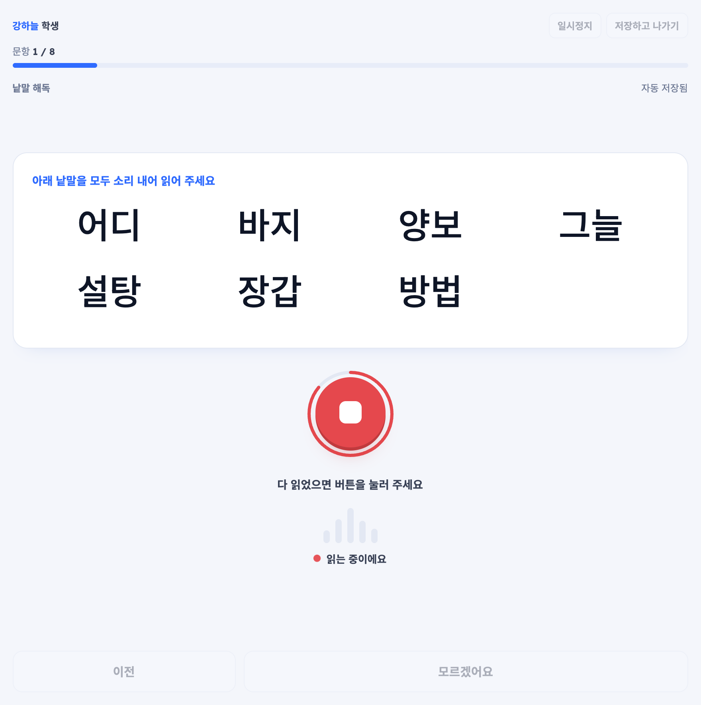
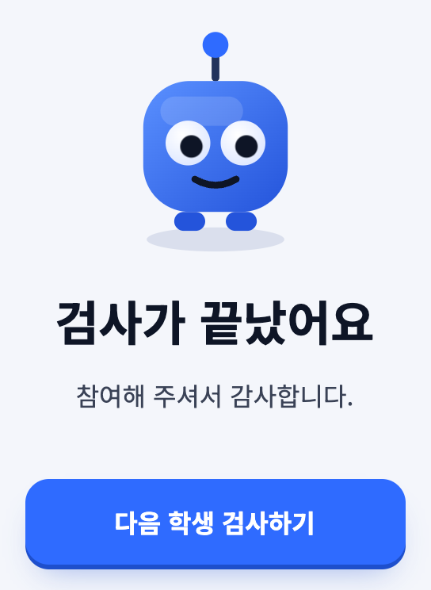
마이크 확인 → 소리 내어 읽기 → 검사 끝. 아이가 보는 화면입니다.
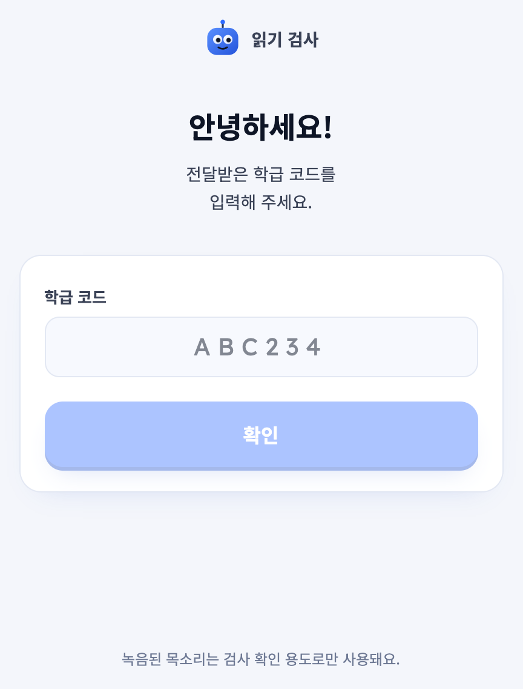
1학급 코드를 넣고 아이를 고릅니다
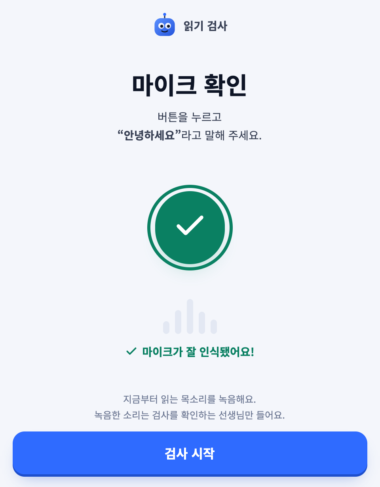
2마이크 확인을 통과합니다
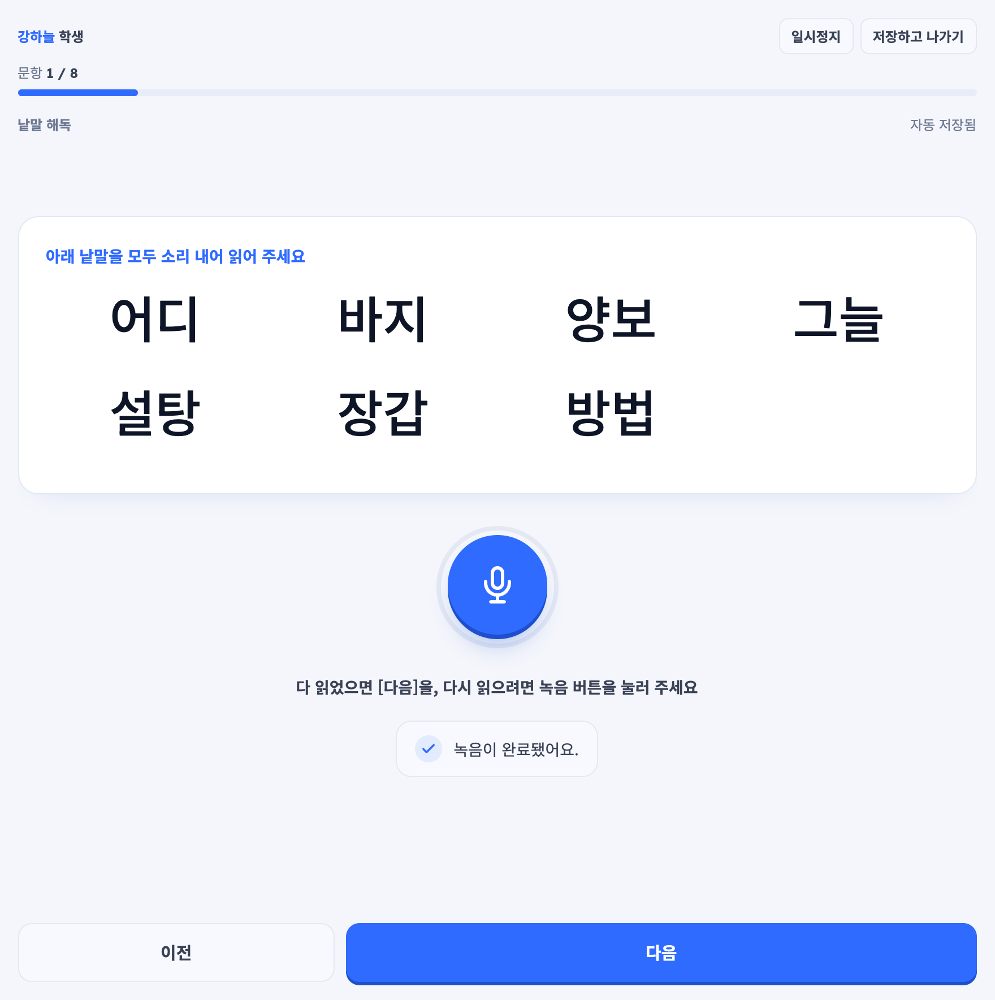
3낱말과 문장을 읽고 녹음합니다
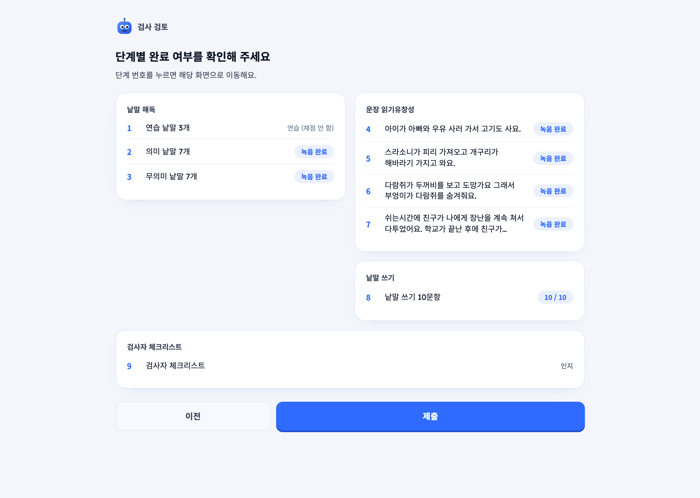
4검토하고 제출합니다
준비물은 헤드셋 마이크가 연결된 컴퓨터, 조용한 자리, 담당자에게 받은 학급 코드입니다. 그리고 보호자 서면 동의서를 받은 아이만 검사할 수 있습니다.
준비가 반입니다. 마이크와 조용한 자리 이 둘만 갖추면 나머지는 화면이 안내합니다.
파란 칸이 선생님이 하는 일입니다. 채점은 하지 않으셔도 됩니다 — 낱말 쓰기만 보고 표시해 주세요.
| 무엇 | 왜 · 어떻게 |
|---|---|
| 헤드셋 마이크 | 아이 목소리가 녹음돼야 검사가 성립합니다. 노트북 내장 마이크는 옆자리 소리까지 담겨 나중에 담당자가 아이 목소리를 구분하기 어렵습니다. 입 가까이 오는 헤드셋이 가장 좋습니다. |
| 조용한 자리 | 교실 뒤나 빈 교실. 아이가 소리 내어 읽는 것을 부담스러워하지 않을 자리면 좋습니다. |
| 보호자 서면 동의서 | 가정통신문으로 받은 보호자 서명이 있는 종이. 검사 시작 화면에서 「동의서를 받았다」에 체크해야 시작할 수 있고, 체크한 시각이 기록으로 남습니다. |
만 14세 미만 아동의 이름·생년월일·음성 녹음을 다루는 검사입니다. 보호자 서면 동의가 법적 근거이고, 화면의 체크는 「그 종이를 받았다」는 선생님의 확인입니다. 체크만 하고 종이가 없으면 근거가 없는 수집이 됩니다.
코드는 승인 메일에만 들어 있습니다. 메일을 지웠다면 담당자에게 다시 요청하세요 — 화면에서 재발급받을 방법은 없습니다. 코드는 담임 선생님만 갖고 있어야 합니다. 코드를 아는 사람은 누구나 그 학급 아이들 명단(이름·성별·생년월일)을 볼 수 있습니다.
아이마다 이 네 걸음을 반복합니다. 한 학급을 연달아 검사하면 코드는 기억되므로 두 번째 아이부터는 코드를 다시 넣지 않아도 됩니다.
0 · O · 1 · I · L이 아예 쓰이지 않습니다.
그 글자로 보이면 잘못 읽은 것입니다.① 코드 6자리를 넣습니다.
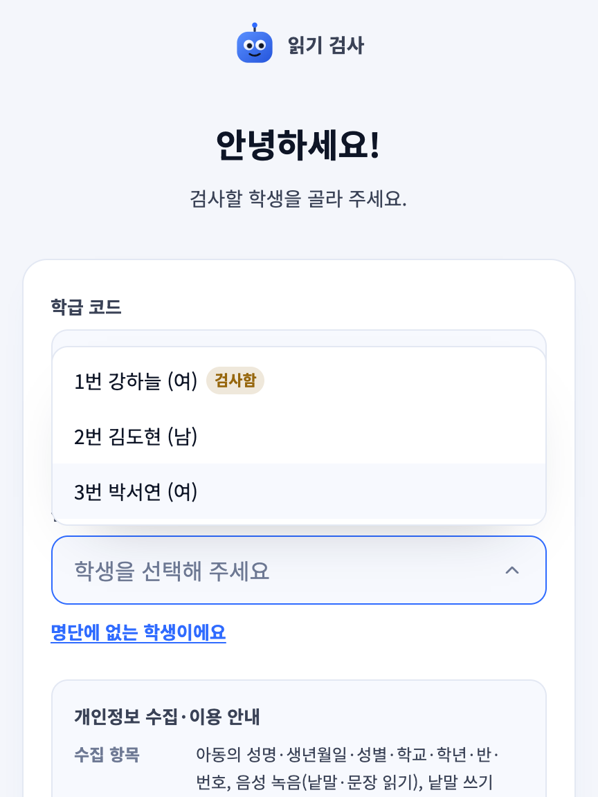
② 명단에서 아이를 고릅니다.
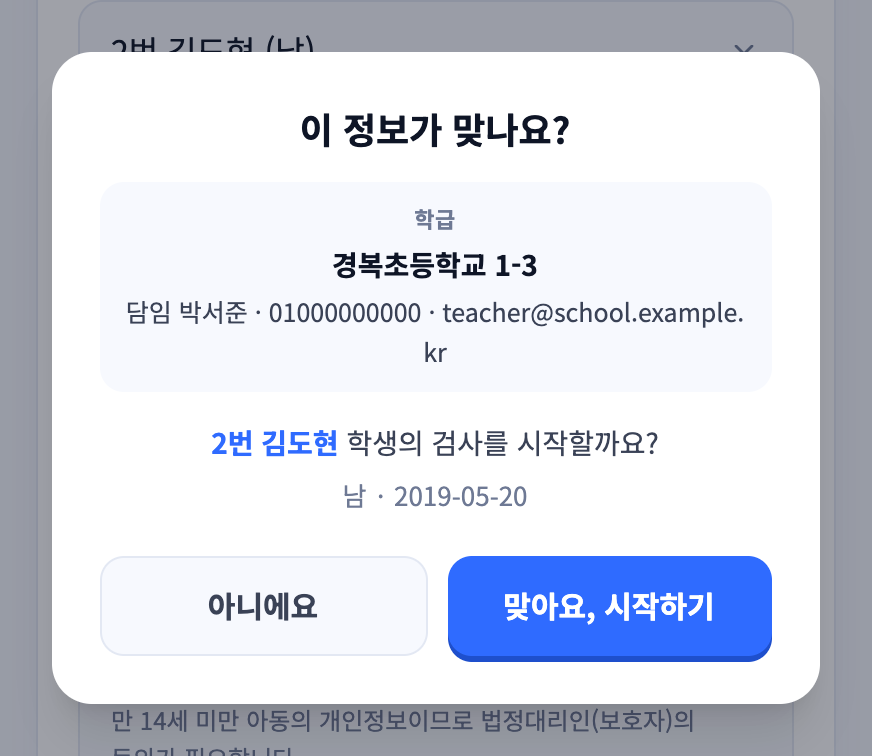
보통은 이 창입니다. 학급·담임·아이 정보를 확인하고 맞아요, 시작하기를 누릅니다.
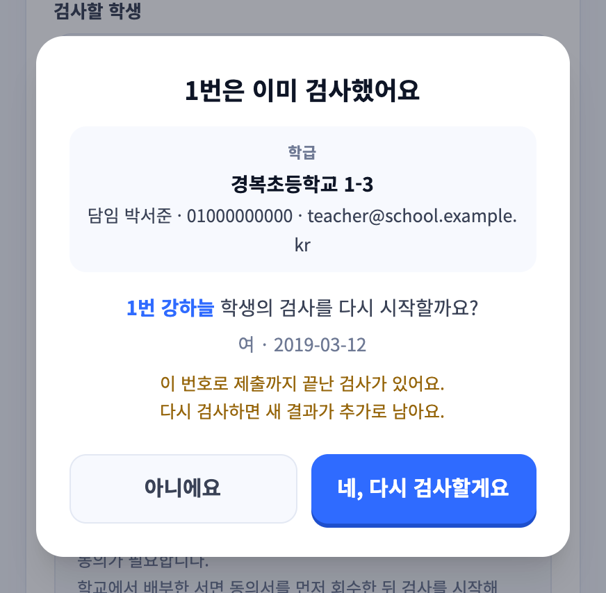
이미 검사한 번호를 고르면 이 창이 뜹니다. 다시 검사해도 이전 기록은 지워지지 않고 회차로 따로 쌓입니다.
전학생이거나 동의서가 늦게 온 아이는 명단에 없는 학생이에요를 누르고 번호·이름·성별·생년월일을 직접 넣습니다. 이때는 오타가 그대로 검사 기록이 됩니다 — 천천히 확인하고 넣어 주세요. 잘못 눌렀으면 명단에서 고르기로 돌아올 수 있습니다.
이 화면을 대충 넘기면 20분을 다 쓰고도 검사가 무효가 됩니다. 가장 중요한 한 걸음입니다.
녹음이 비어 있으면 담당자는 그 과제를 오반응(0점)으로 채점하게 됩니다. 아이를 다시 불러 처음부터 검사하는 것 말고는 방법이 없습니다. 그래서 이 화면이 있습니다 — 꼭 통과시키고 넘어가세요.
브라우저가 마이크 권한을 막은 것입니다. 화면이 기기에 맞는 해제 방법을 알려 주니 그대로 따르고, 권한을 허용한 뒤 다시 시도하세요. 그래도 안 되면 다른 브라우저(크롬·엣지·사파리 최신)로 열어 보세요.
버튼을 누르기 전.
「마이크가 잘 인식됐어요」가 보이면 통과입니다. 이제 검사 시작이 눌립니다.
연습은 점수에 들어가지 않습니다. 버튼을 누르고 읽고 멈추는 것을 아이가 한 번 해 보게 하는 단계입니다.
| 연습부터 하기 | 이 검사를 처음 하는 아이. 대부분 이쪽입니다. |
| 연습 없이 시작 | 같은 아이를 다시 검사할 때, 또는 앞 아이의 검사를 보고 방법을 이미 아는 경우. |
연습 녹음은 서버에 올라가지 않습니다. 마음 편히 여러 번 시켜도 됩니다. 화면 위에 연습 띠가 붙어 있어 본 검사와 헷갈리지 않습니다.
「연습이 끝났어요 · 이제 진짜 검사를 시작해요」 화면이 한 번 나옵니다. 아이에게 여기부터가 진짜라는 것을 말해 주고 시작하세요.
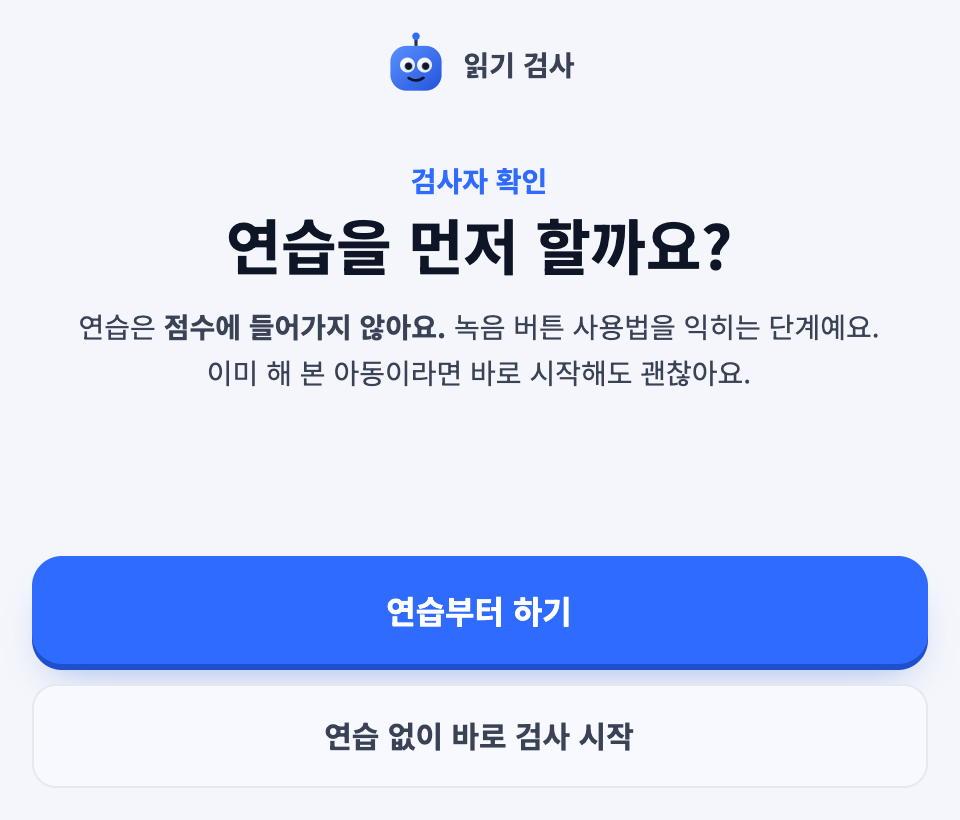
마이크 확인을 통과하면 선생님에게 묻습니다.
연습 낱말은 세 개입니다.
한 화면에 나온 낱말이나 문장을 아이가 소리 내어 다 읽으면 다음으로 넘어갑니다. 1학년은 모두 8단계입니다.
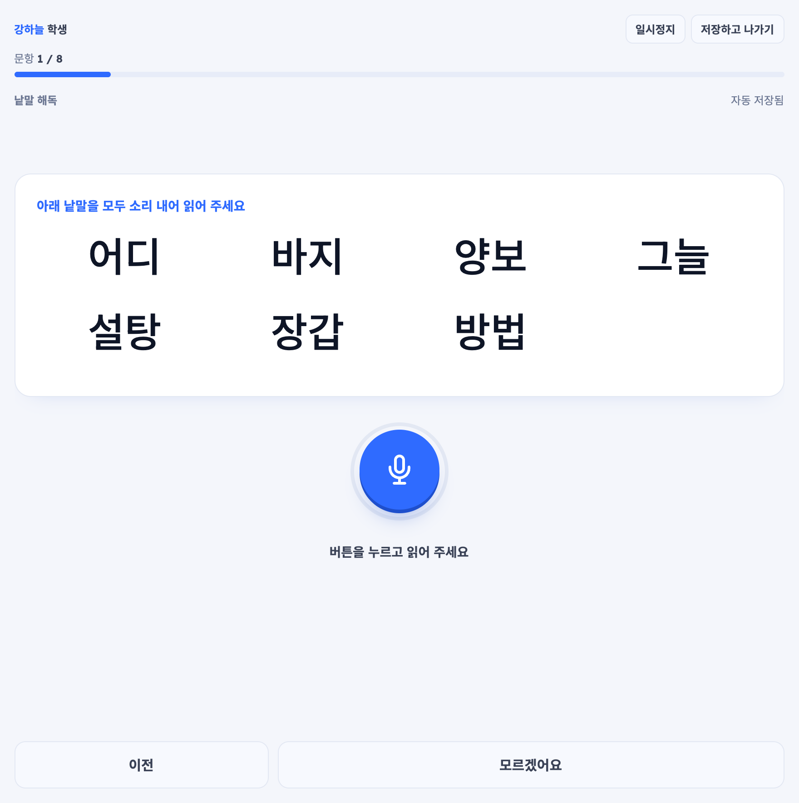
녹음 전. 주 버튼이 모르겠어요로 보입니다.
녹음 중. 「읽는 중이에요」가 표시됩니다.
| 과제 | 기준 | 선생님이 할 일 |
|---|---|---|
| 낱말 읽기 | 30초 안에 정확하게 읽은 낱말 수 | 시간을 재실 필요는 없습니다. 아이가 다 읽으면 버튼을 눌러 멈추면 됩니다 — 기준 시간은 담당자가 녹음을 들으며 적용합니다. |
| 문장 읽기 | 40초 안에 정확하게 읽은 어절 수 |
녹음은 마지막 반응이 잘리지 않도록 기준 시간보다 조금 더 담깁니다. 그래서 30초를 넘겨 녹음돼도 문제가 아닙니다.
아이가 못 읽겠다고 하거나 응답을 거부하면 그대로 넘겨도 됩니다 — 그것도 유효한 관찰입니다. 다만 녹음이 없으면 담당자 화면에 미녹음으로 표시되고 오반응(0점)으로 채점됩니다.
그래서 「읽기 싫어서 넘긴 것」과 「마이크가 안 돼서 빈 것」이 구별되지 않습니다. 마이크 문제로 비었다면 그 아이는 다시 검사해 주세요.
아이가 중간에 막혔거나 잡음이 심했다면 같은 화면에서 녹음 버튼을 다시 누르세요. 마지막 녹음이 앞의 것을 대신합니다. 한 화면에서 10번까지 다시 녹음할 수 있습니다.
아이가 화장실에 가거나, 수업 시간이 끝나거나, 창이 닫혀도 지금까지 한 것은 남습니다.
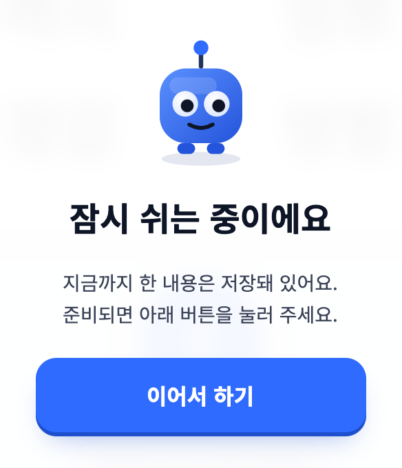
일시정지 — 화면을 덮어 아이의 오터치까지 막습니다. 잠시 쉴 때 쓰세요. 녹음 중에는 눌리지 않습니다.
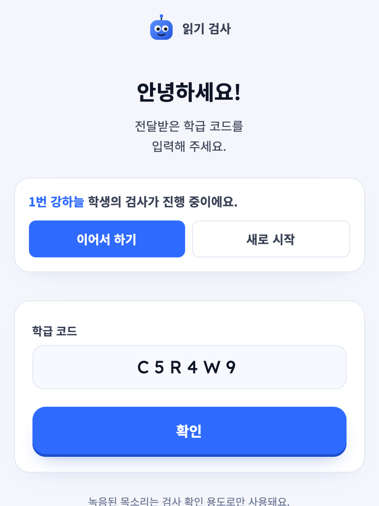
다시 들어왔을 때 — 저장하고 나가기로 나갔거나 실수로 창을 닫았다면 이 카드가 뜹니다.
이어서 하기 바로 옆에 있어 잘못 누르기 쉽습니다. 누르면 그 아이의 진행 상태가 지워져 이 기기에서 그 검사를 이어갈 수 없습니다(이미 올라간 녹음은 담당자에게 남지만, 아이는 처음부터 다시 검사해야 합니다). 확인 창이 한 번 뜨니 잘 읽고 누르세요.
됩니다. 진행 상태는 그 컴퓨터의 브라우저에 저장돼 있어, 나중에 같은 컴퓨터·같은 브라우저로 들어오면 이어서 할 수 있습니다. 다만 다른 컴퓨터로는 이어지지 않습니다.
제출하지 않은 검사는 담당자 화면에 진행 중으로 남아 채점되지 않습니다. 한 아이를 시작했으면 그 자리에서 제출까지 마치는 것이 가장 안전합니다.
이 두 화면은 아이가 아니라 선생님이 입력합니다. 녹음이 없어서 선생님의 입력이 유일한 기록입니다.
정확하게 쓴 낱말만 「예」입니다. 맞춤법이 틀렸거나 글자가 빠졌으면 「아니오」입니다. 판단이 어려우면 아이가 쓴 종이를 남겨 두고 담당자에게 알려 주세요.
모두 예·모두 아니오로 한 번에 채운 뒤 틀린 것만 바꾸면 빠릅니다.
담당자 결과지에서 낱말 쓰기는 읽기 전용으로만 보입니다. 지금 잘못 넣으면 담당자도 고칠 수 없고, 검사 기록을 지우고 다시 검사하는 수밖에 없습니다. 한 번 더 확인하고 넘어가세요.
아이가 쓴 종이는 검사가 끝난 뒤 학교 지침에 따라 보관·폐기해 주세요. 이 시스템에는 예/아니오만 저장되고 아이의 필적은 올라가지 않습니다.
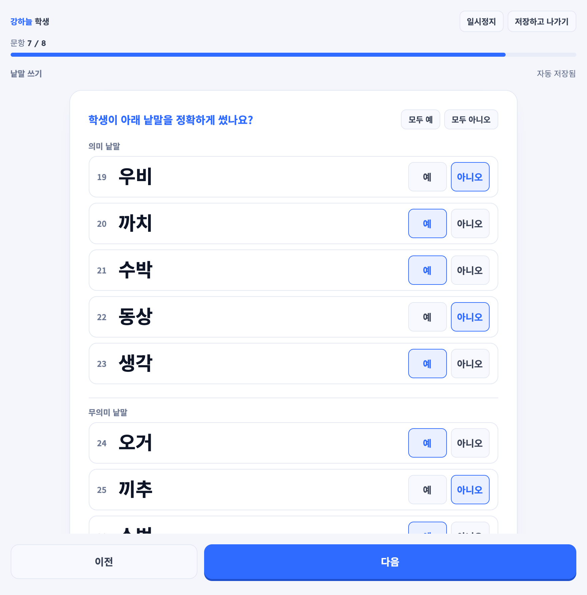
아이가 종이에 쓴 낱말을 보고 예 / 아니오를 고릅니다.
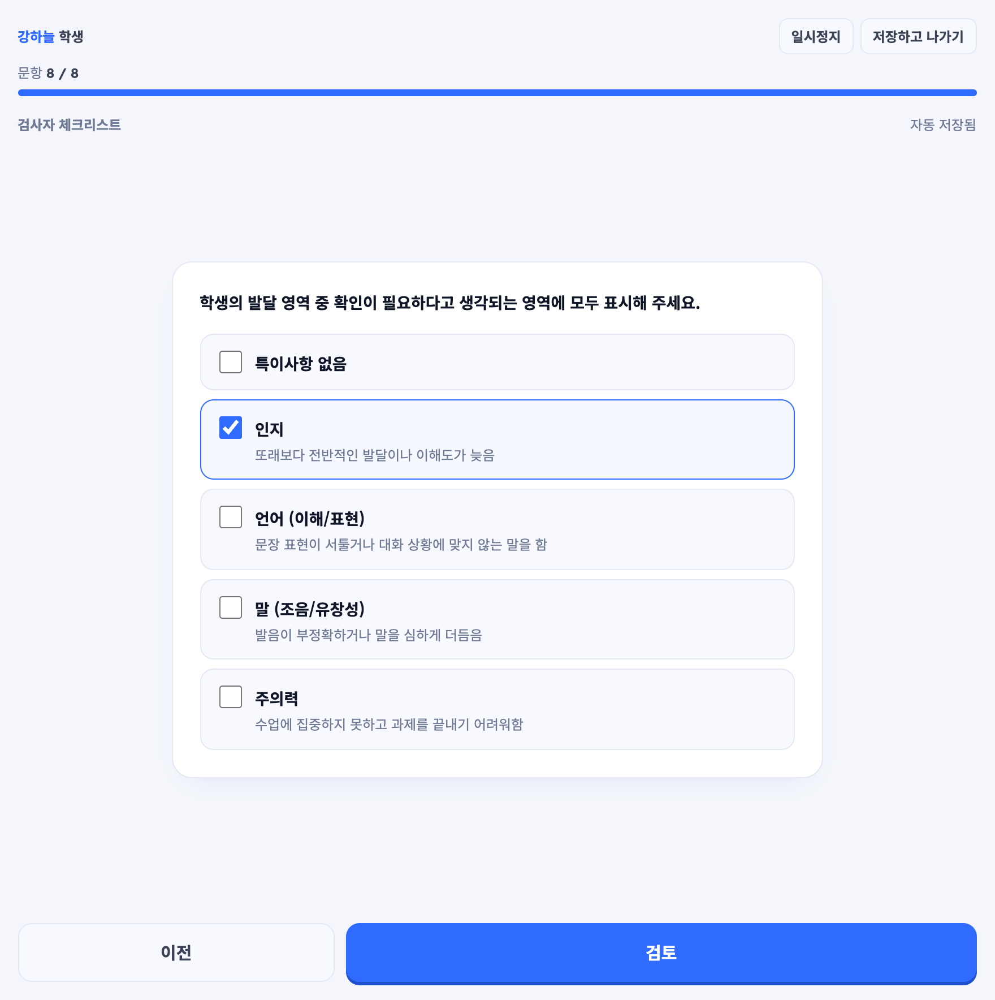
여러 영역을 함께 고를 수 있습니다.
검사하면서 눈에 띈 것이 있으면 표시해 주세요. 점수가 아니라 참고 정보이며, 담당자가 결과를 볼 때 함께 읽습니다.
이 체크는 진단이 아닙니다. 「확인이 필요해 보인다」 정도의 관찰만 남기면 충분하고, 비워 두어도 검사는 정상적으로 제출됩니다.
마지막 단계에서 검토를 누르면 단계별로 무엇이 저장됐는지 한눈에 보여 줍니다. 여기서 빠진 것을 되돌아가 채울 수 있습니다.
단계 번호를 누르면 그 화면으로 돌아갑니다. 되돌아가 다시 녹음한 뒤 검토로 돌아가기를 누르면 이 화면으로 옵니다.
| 표시 | 뜻과 할 일 |
|---|---|
| 녹음 완료 | 그 단계의 녹음이 저장됐습니다. 그대로 두면 됩니다. |
| 연습 (채점 안 함) | 연습 단계입니다. 비어 있어도 괜찮습니다. |
| 아무 표시도 없음 | 녹음이 없는 단계입니다. 번호를 눌러 돌아가 다시 녹음하세요. 그대로 제출하면 0점으로 채점됩니다. |
제출한 검사에는 녹음을 더 올릴 수도, 다시 제출할 수도 없습니다. 기록이 나중에 바뀌지 않도록 잠그는 것입니다.
빠진 녹음을 발견했다면 제출하기 전에 검토 화면에서 채우세요. 이미 제출했다면 같은 아이를 다시 검사하면 됩니다(이전 기록은 남습니다).
「검사가 끝났어요」가 보이면 그 아이의 검사는 담당자에게 넘어갔습니다. 다음 학생 검사하기를 누르면 시작 화면으로 돌아가고, 학급 코드는 그대로 남아 있습니다 — 다음 아이를 바로 고르면 됩니다.
이 버튼을 누르면 방금 아이의 진행 정보가 그 컴퓨터에서 지워집니다. 공용 컴퓨터에서는 꼭 눌러 주세요.
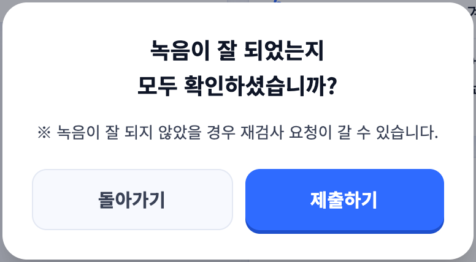
제출 직전 한 번 더 묻습니다.
이 화면이 나오면 끝입니다.
코드를 못 받았거나, 녹음이 안 되거나, 잘못 제출했을 때는 담당자에게 알려 주세요. 학교·학년·반과 아이 번호를 함께 전해 주시면 바로 찾을 수 있습니다.
코드를 넣었는데 「없는 코드」라고 나옵니다
아직 담당자가 승인하지 않은 신청이거나, 코드가 삭제된 경우, 또는 오타입니다.
0 · O · 1 · I · L은 코드에 쓰이지 않으니 그 글자가 보이면 잘못 읽은 것입니다.
승인 메일의 코드를 그대로 복사해 넣어 보세요.
마이크 확인이 계속 「목소리가 잘 안 들려요」입니다
① 헤드셋이 제대로 꽂혔는지 ② 컴퓨터 소리 설정에서 입력 장치가 헤드셋인지 ③ 마이크가 입 쪽을 향하는지 봐 주세요. 그래도 안 되면 다른 헤드셋이나 다른 컴퓨터로 바꾸세요. 통과하지 못하면 검사를 시작하지 마세요.
아이가 읽기를 거부합니다
억지로 시키지 않아도 됩니다. 모르겠어요로 넘기거나, 저장하고 나가기로 멈추고 다른 날 이어서 하세요. 거부도 유효한 관찰이며 그대로 기록됩니다.
녹음 중에 아이가 딴 얘기를 했어요
괜찮습니다. 그 화면에서 녹음 버튼을 다시 눌러 새로 녹음하면 마지막 것만 남습니다. 한 화면에서 10번까지 됩니다.
화면이 꺼지거나 브라우저가 닫혔습니다
같은 컴퓨터·같은 브라우저로 다시 들어오면 이어서 하기가 뜹니다. 그때까지 저장된 녹음은 남아 있습니다. 새로 시작은 누르지 마세요.
같은 아이를 두 번 검사해도 됩니까
됩니다. 이전 기록은 지워지지 않고 회차로 따로 쌓입니다. 마이크 문제로 녹음이 비었을 때는 다시 검사하는 것이 맞습니다.
전학생이 왔습니다 / 동의서가 늦게 왔습니다
명단 화면에서 명단에 없는 학생이에요를 눌러 직접 넣으세요. 번호·이름·성별·생년월일을 오타 없이 넣어 주셔야 합니다.
낱말 쓰기를 잘못 눌렀는데 이미 제출했습니다
담당자도 고칠 수 없습니다. 담당자에게 알려 그 기록을 지우고 다시 검사하는 것이 유일한 방법입니다. 되도록 제출 전에 확인해 주세요.
녹음이 외부로 나가나요
나가지 않습니다. 녹음은 비공개 보관소에 저장되고, 검사를 확인하는 담당자만 듣습니다. 음성 인식 서비스에 보내지 않습니다.
점수는 언제 나옵니까
담당자가 녹음을 들으며 채점한 뒤 정리합니다. 선생님 화면에는 점수가 나오지 않습니다 — 결과 안내 시점은 담당자에게 확인해 주세요.